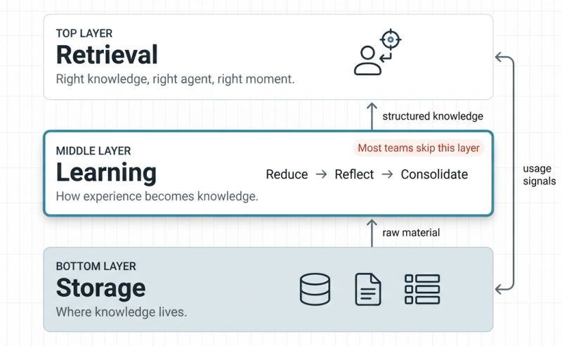

Agent Memory vs. Agentic Memory
The distinction most teams miss, and the three-layer architecture that solves it.

Most teams treat agent memory like a filing cabinet when they should be treating it like a brain. There's a massive difference between agent memory and agentic memory, and missing that distinction cost me weeks of dev time.
Standard agent memory is just a passive knowledge store, essentially basic RAG. The agent queries a database, gets a result, and moves on. It's a fine starting point, but it's static infrastructure.
Agentic memory is different. The agent is an active participant. It doesn't just store data; it learns. It identifies contradictions, merges redundant info, and discards the junk.
To solve this, you need a three-layer architecture:
If you're building multi-agent systems, the question isn't whether you need agentic memory. You do.
Most failures happen at the boundaries and seams. A storage failure is just lost data, but a learning failure is a missed insight. If you're scaling agents, stop obsessing over the database and start designing the learning layer between storage and retrieval.
← All writing